Welcome. I live here. I can bake but I won't store cookies.
Homepage Travel Writing Recipes Books Blog Films Lifestyle
I've been to a few places.
South Korea
Transcript of a two-day blog post I wrote from Seoul during the summer of 2018
A quick update to let you know I’ve arrived in Seoul safe and well. I’d have updated sooner but after 13 hours total on airplanes I really needed to shower and nap.
This is without a doubt the fanciest hotel I've stayed in. The most notable feature is the space-age toilet, which has a heated seat and can administer an enema or a # massage, if that's something that appeals to you. I have not tested these features.
That’s not to be ungrateful – in fact I’m actually worried about adjusting from this incredible toilet to what will most likely be a hole in the ground in the desert.
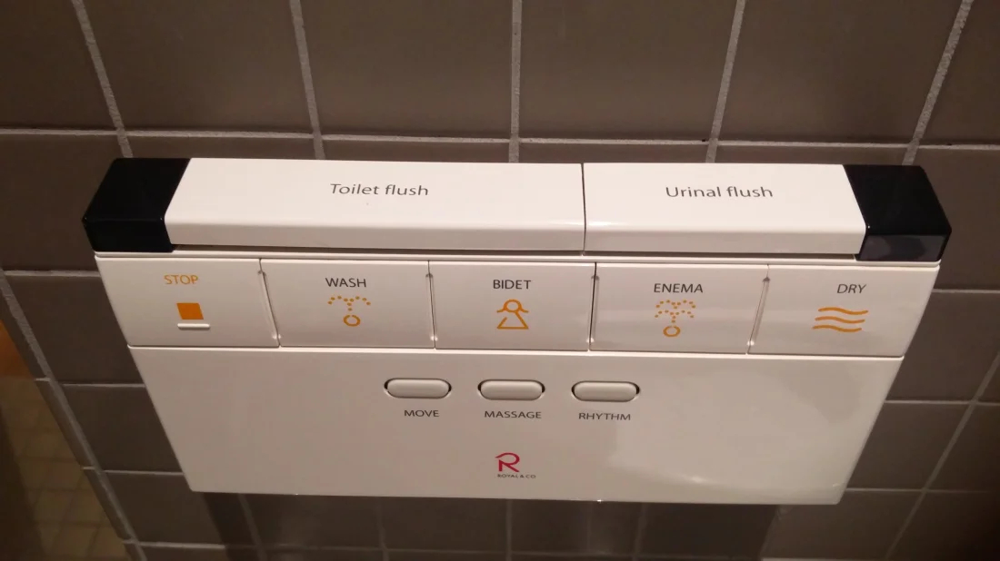 Control panel for very fancy, vaguely threatening toilet
Before I get some much needed rest, here is the view from the hotel window:
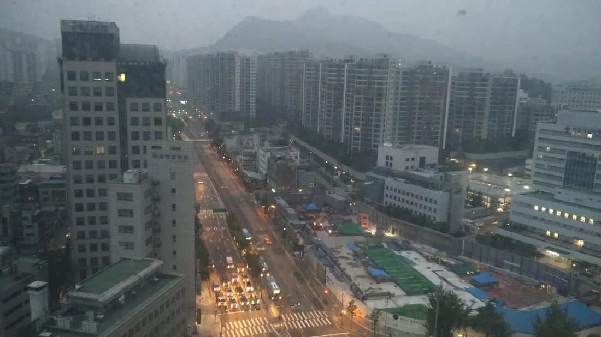
Thus concludes the Korean portion of our trip.
I’m currently in Incheon Intl Airport awaiting the flight to Ulanbataar, and before we lift off I’ll fill you in on what we’ve been doing for the last day and a half.
The first thing we did yesterday was visit a Meerkat Café in Seogyo-dong. I know nobody wants to hear me talk about it so I’ll just oblige you all with the pictures I know you really want.
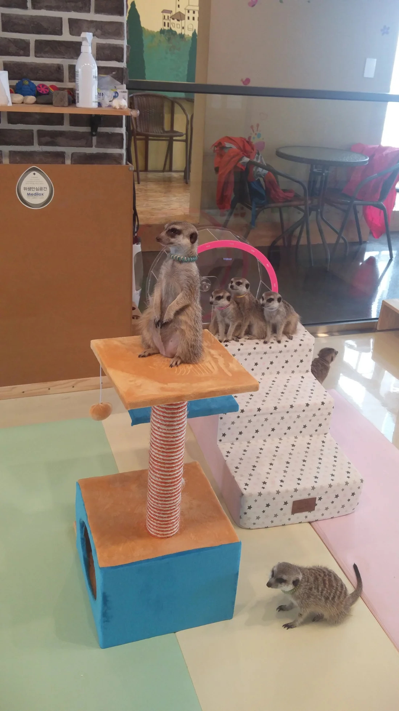 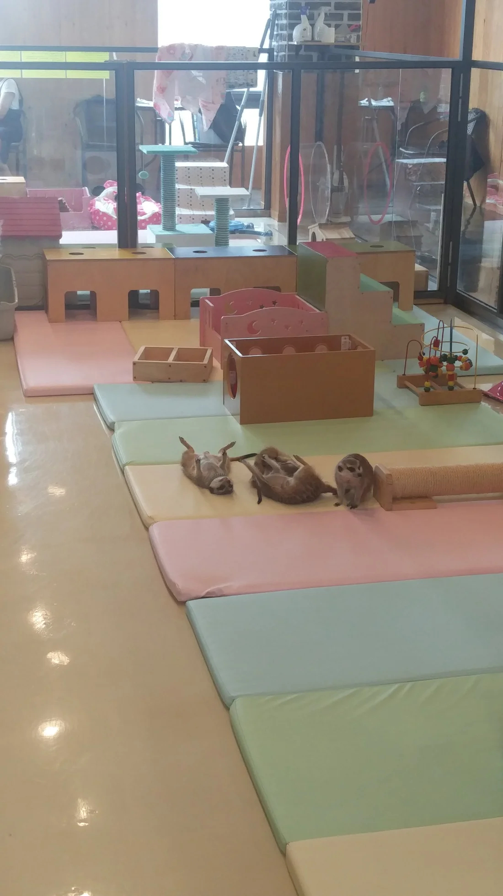 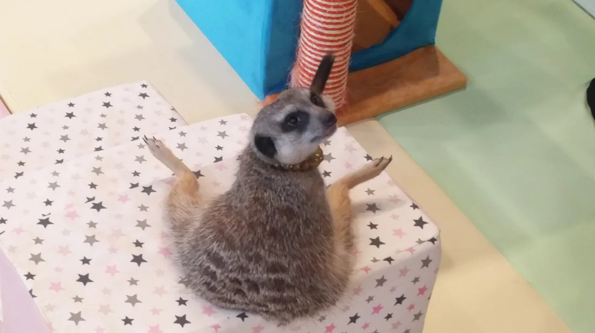
The meerkats are in a separate pen from the rest of the café but they are not the only animals there, and the main floor is roamed more or less freely by wallabies, cats and a raccoon.
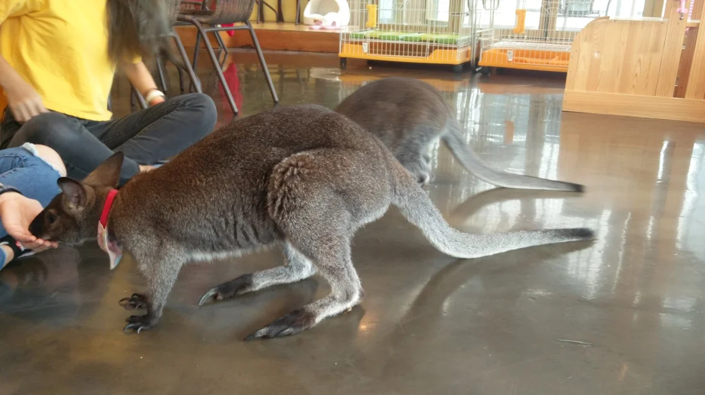 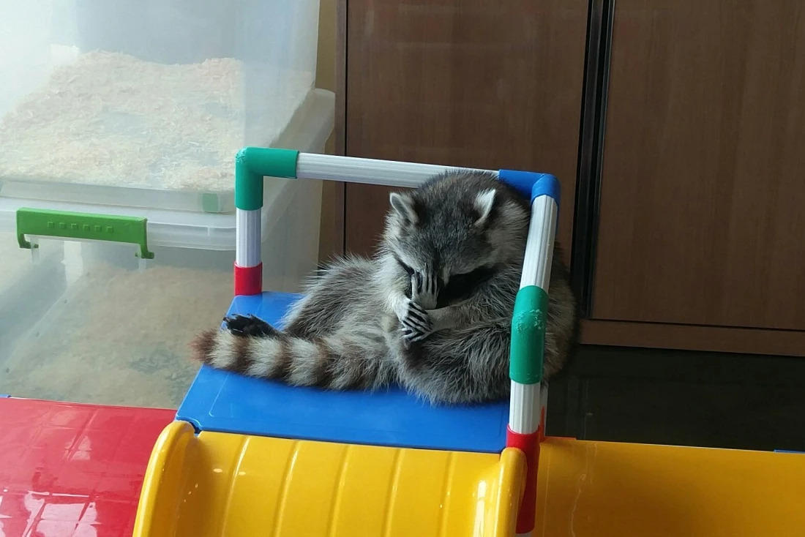 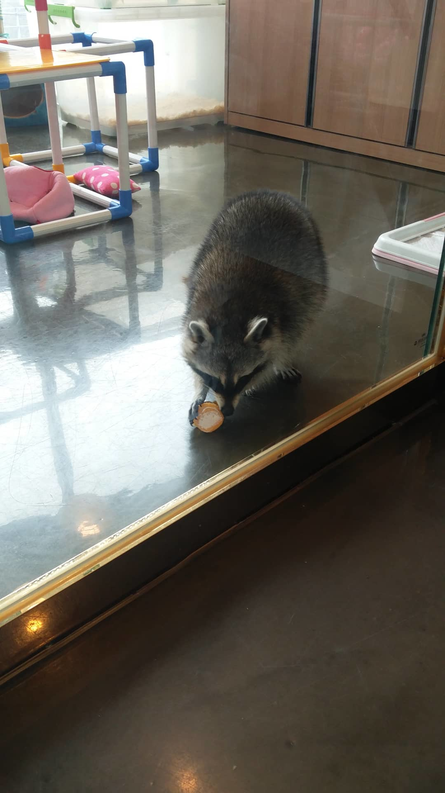 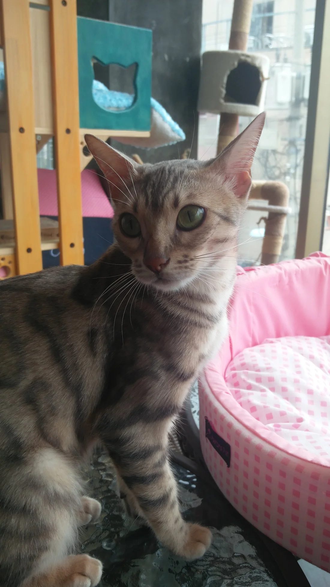 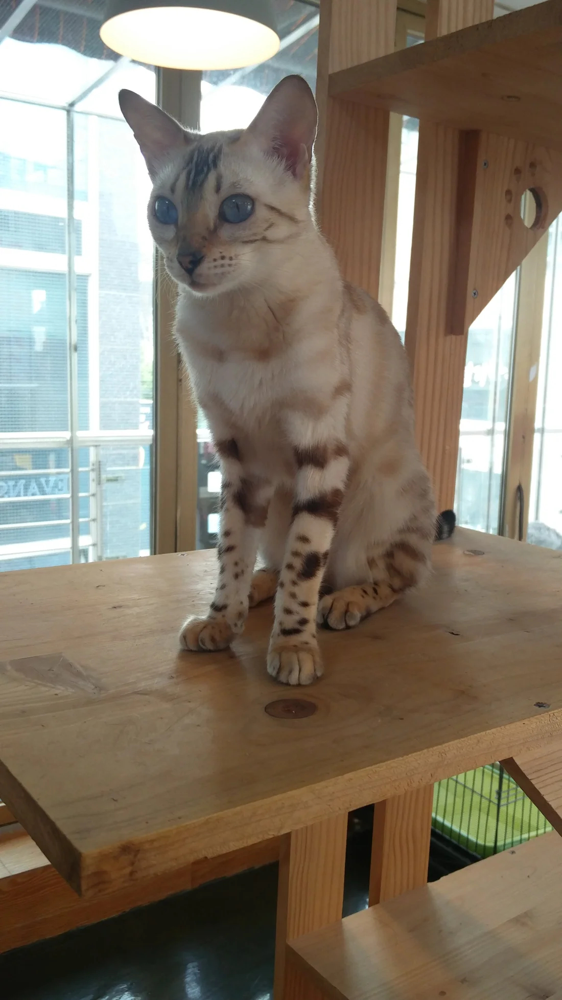
In addition to the animals on the main café floor, they had two silver foxes who were brought in from their outdoor enclosure to be hand-fed melon by visitors.
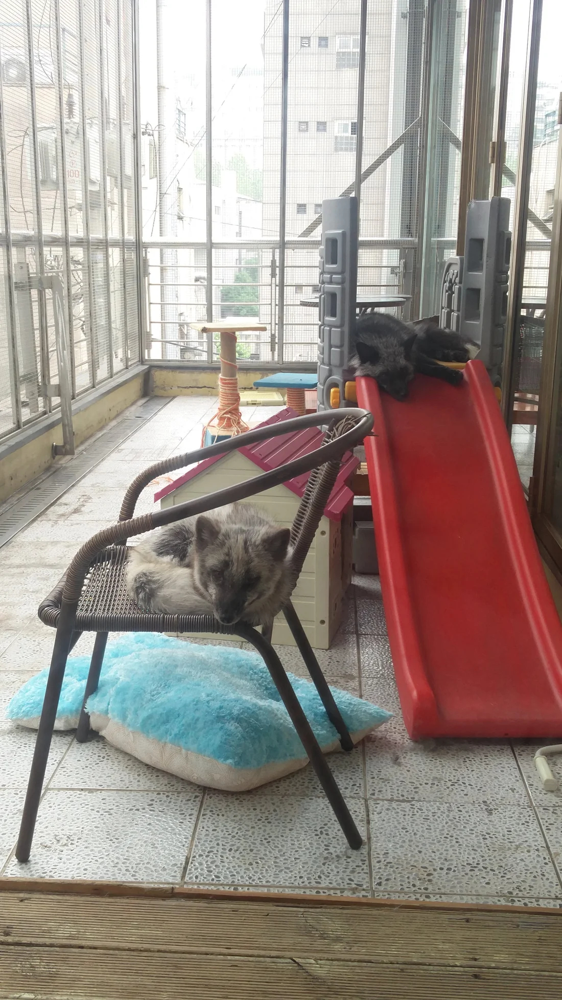
The staff were very kind and careful with the animals and it was clear that every resident well looked after. The animals had a great relationship with the staff too and it’s obvious that they are dearly loved.
Last night we went for a walk through Myeongdong and had a lovely meal of Bibimbap - one of my favourite Korean dishes.
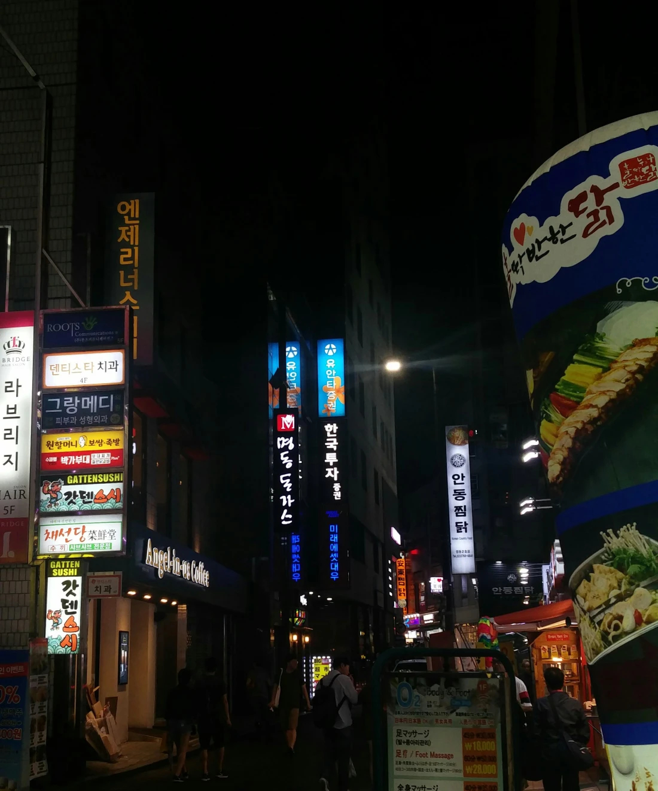
We’re still waiting to check in at the airport and our flight isn’t till 7pm local time so presumably I’ll be spending the rest of the day scampering around Incheon Int. Airport in my crocs. I’ll hopefully update once I reach Ulanbataar and get settled. Until then, enjoy the meerkats.